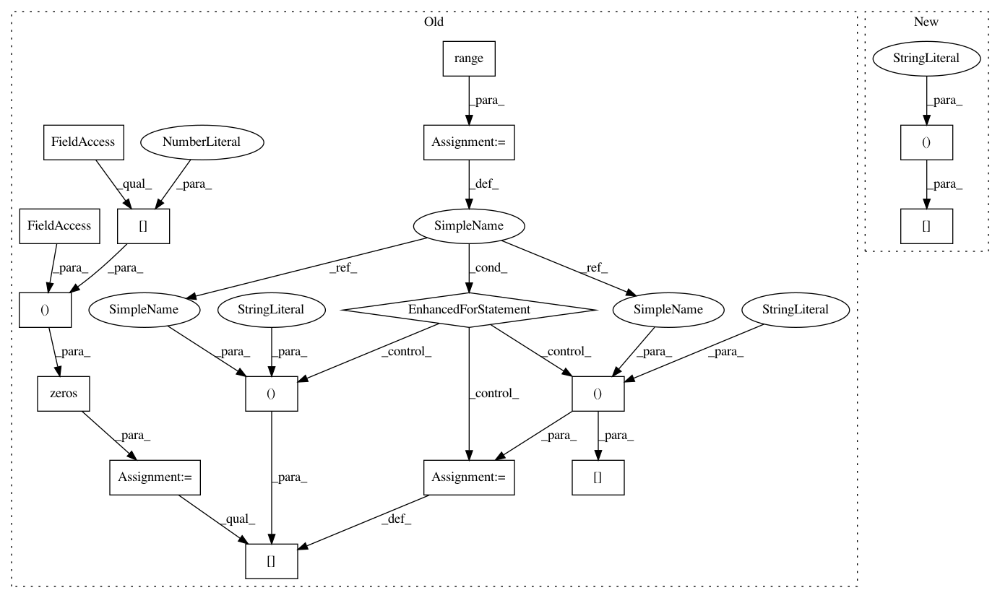

0911c4f8477ee084c4346616d10387d56a8c58f1,cde/density_simulation/GMM.py,GaussianMixture,simulate_conditional,#GaussianMixture#Any#,121
Before Change
W_x = self._W_x(X)
Y = np.zeros(shape=(X.shape[0], self.ndim_y))
for i in range(X.shape[0]):
discrete_dist = stats.rv_discrete(values=(range(self.n_kernels), W_x[i,:]))
idx = discrete_dist.rvs()
Y[i, :] = self.gaussians_y[idx].rvs()
assert X.shape[0] == Y.shape[0]
return X, Y
def _draw_from_discrete(self, w_x):
After Change
X = self._handle_input_dimensionality(X)
if np.all(np.all(X == X[0, :], axis=1)):
return self._simulate_rows_same(X)
else:
return self._simulate_rows_individually(X)
In pattern: SUPERPATTERN
Frequency: 3
Non-data size: 16
Instances
Project Name: freelunchtheorem/Conditional_Density_Estimation
Commit Name: 0911c4f8477ee084c4346616d10387d56a8c58f1
Time: 2018-04-04
Author: jonas.rothfuss@gmx.de
File Name: cde/density_simulation/GMM.py
Class Name: GaussianMixture
Method Name: simulate_conditional
Project Name: freelunchtheorem/Conditional_Density_Estimation
Commit Name: 0911c4f8477ee084c4346616d10387d56a8c58f1
Time: 2018-04-04
Author: jonas.rothfuss@gmx.de
File Name: cde/density_simulation/GMM.py
Class Name: GaussianMixture
Method Name: simulate_conditional
Project Name: freelunchtheorem/Conditional_Density_Estimation
Commit Name: 0911c4f8477ee084c4346616d10387d56a8c58f1
Time: 2018-04-04
Author: jonas.rothfuss@gmx.de
File Name: cde/density_estimator/BaseDensityEstimator.py
Class Name: BaseMixtureEstimator
Method Name: sample
Project Name: scikit-learn-contrib/DESlib
Commit Name: 1e6e979fd9de47c38e2bda2189008a3bae1faaf4
Time: 2018-08-24
Author: rafaelmenelau@gmail.com
File Name: deslib/des/des_mi.py
Class Name: DESMI
Method Name: estimate_competence